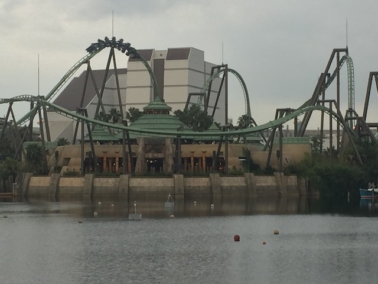
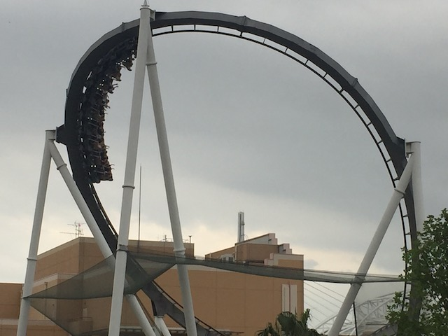
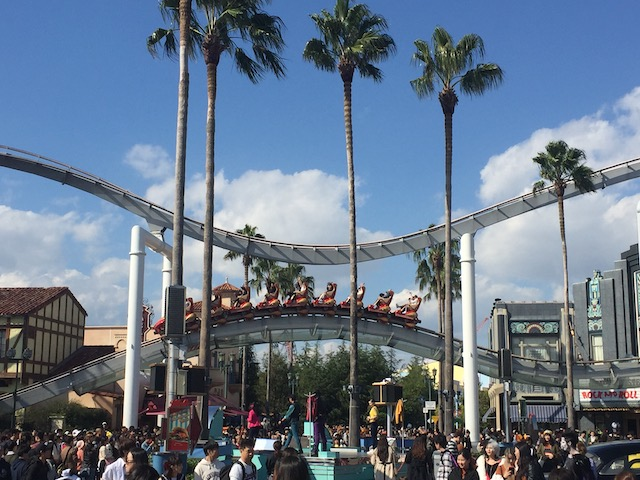
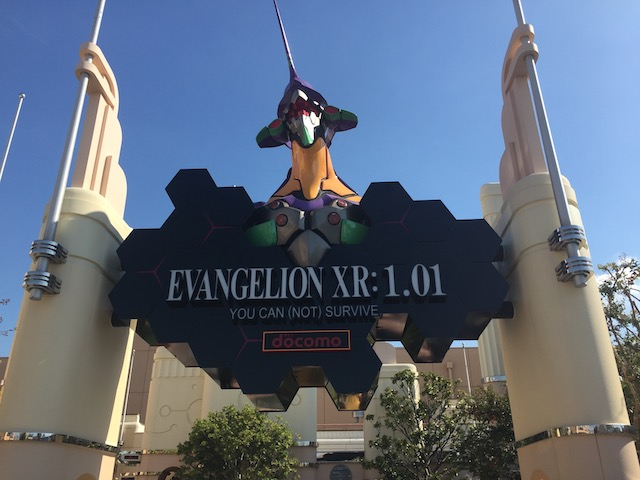
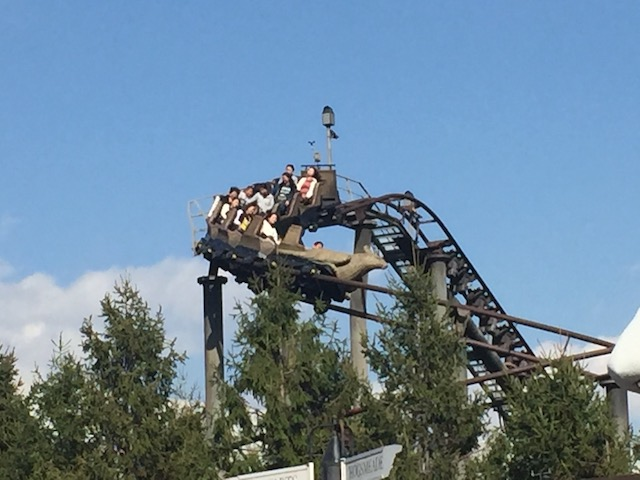
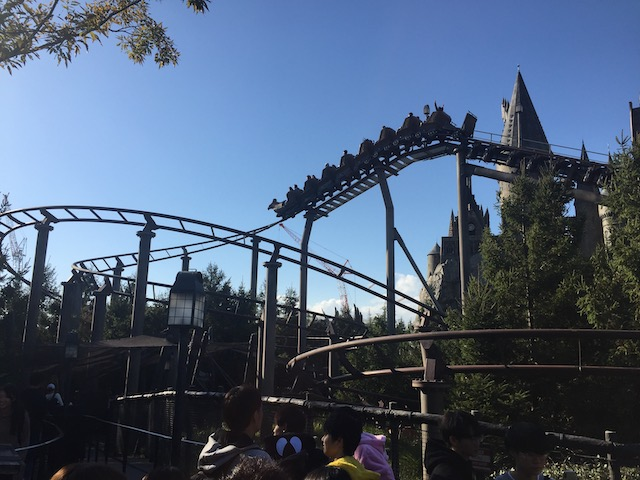
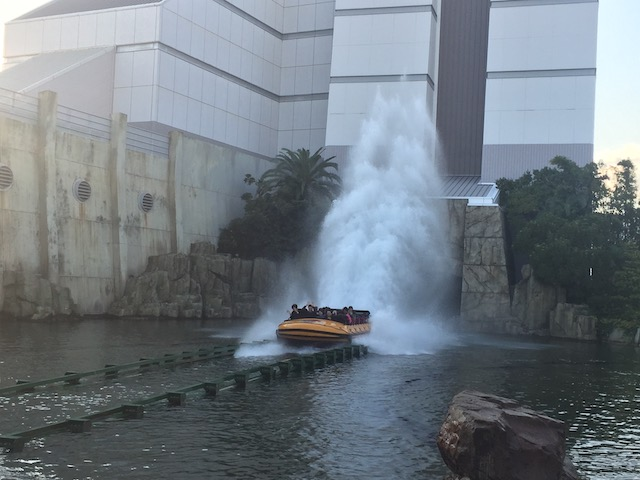
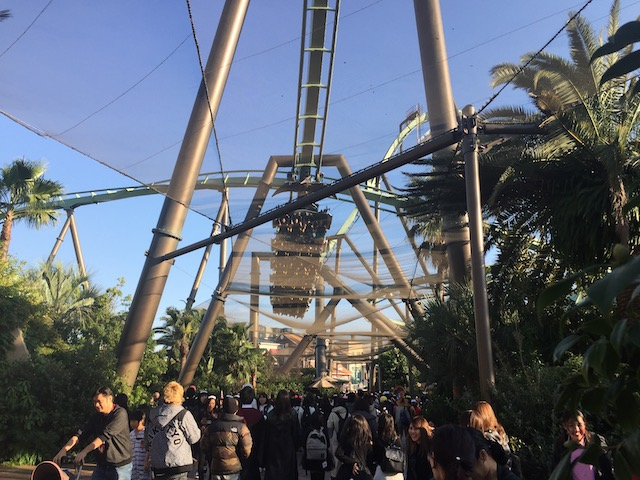
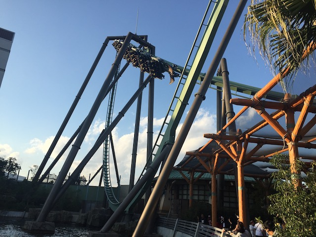

| |
JAPAN 2018!!! =)
Osaka
Universal Studios Japan
Parque Espana Nagashima Spaland Hiroshima & Kyoto Tobu Zoo Fuji-Q Highlands
Tokyo Joypolis Tokyo Dome City Yomiuriland Sea Paradise Hamanako Pal Pal Tokyo Disney Resort Yokohama Cosmoworld
Toshimaen
All right. Osaka is a ton of fun, and I'm loving Japan, but don't forget. This is IncredibleCOASTERS. And as such, we did many of the amazing and popular theme parks of Japan, and gee. I wonder what our first theme park of the trip is going to be? If only there was some way of knowing where we were going. Perhaps, if this park had its own metro line, then we just might have a clue. ;)
Yeah. Just a heads up. Today is going to be a BUSY day.
Hey look! This place also has a Citywalk!
So yeah. If you couldn't tell, we're at Universal Studios Japan today. I know I haven't been a fan of Universal over the past few years, but today was freaking awesome.
 First coaster in Japan!
First coaster in Japan!
Yeah. One thing you have to note about Universal Studios Japan. This park gets BUSY!!! REALLY F*CKING BUSY!!! I know Tokyo Disney Resort constantly gets talked about for just how freaking busy that place gets! And yeah. That place is really freaking crowded, but (Spoiler Alert) You'll be fine if you're smart about that park. Universal Studios Japan, HOLY SH*T!!!! Good f*cking luck. You're gonna need it. That's a 3 hour line for Flying Dinosaur behind me.
 Yeah. Universal Studios Japan does have Single Riders Lines, but the craziest thing, they BARELY do anything to help with lines! The normal line is 3 hours, but the Single Riders Line is 2.5 hours. Yeah. Let that sink in.
Yeah. Universal Studios Japan does have Single Riders Lines, but the craziest thing, they BARELY do anything to help with lines! The normal line is 3 hours, but the Single Riders Line is 2.5 hours. Yeah. Let that sink in.
 So yeah. Flying Dinosaur is one of USJ's newer coasters, and I know this got a lot of hype. HOLY SH*T!!! THIS COASTER DESERVES EVERY PEICE OF PRAISE ITS RECIEVED!!!
So yeah. Flying Dinosaur is one of USJ's newer coasters, and I know this got a lot of hype. HOLY SH*T!!! THIS COASTER DESERVES EVERY PEICE OF PRAISE ITS RECIEVED!!!
 This thing makes Tatsu feel like Superman: Ultimate Flight. It is THAT amazing!!!
This thing makes Tatsu feel like Superman: Ultimate Flight. It is THAT amazing!!!

So this part of the ride is technically 2 inversions, and is classified as an inline twist, a lie to fly, and an inside Raven Turn. So an inversion, and two half-inversions. But if you really want to be accurate. Just call it CRAZY!!! HOLY SH*T!!! This seriously is up there as far as sheer favorite elements. I mean...WOW!!!
 Yeah. The Pretzal Loop is a ton of fun and all, but....that Crazy Inversion Duo just tops it. It is just so good
Yeah. The Pretzal Loop is a ton of fun and all, but....that Crazy Inversion Duo just tops it. It is just so good
 I know people will complain about the new B&Ms being dull, forceless, and not nearly as good as the old-school B&Ms. And as a general rule of thumb, that is true. But that's only because parks keep asking them for tamer coasters. Between Fury 325 and Flying Dinosaur, B&M proves that their new coasters can be just as great and amazing as their old-school classics if the park asks for that.
I know people will complain about the new B&Ms being dull, forceless, and not nearly as good as the old-school B&Ms. And as a general rule of thumb, that is true. But that's only because parks keep asking them for tamer coasters. Between Fury 325 and Flying Dinosaur, B&M proves that their new coasters can be just as great and amazing as their old-school classics if the park asks for that.
 Yeah. I wish I could've done that, but this park is just so busy that...I don't have time. Even if I really liked Backdraft.
Yeah. I wish I could've done that, but this park is just so busy that...I don't have time. Even if I really liked Backdraft.
"Konichiwa! I'm a statue! Quit blocking the path to look at me!"
Seriously, USJ is awesome. Honestly, my thoughts on the park are VERY similar to my thoughts on Universal Orlando back in 2007, before they began "Operation Make Kevin do a 180".
 OK. Time to get on the other B&M they have here.
OK. Time to get on the other B&M they have here.
 Aww. Hollywood Dream is so cute. I just wanna reach out and pet it.
Aww. Hollywood Dream is so cute. I just wanna reach out and pet it.

I know Hollywood Dream is considered to be one of the B&M Hypers despite not being 200 ft tall. Yeah, I know there are coasters under that height that get classified as hyper coasters *cough* Steel Eel *cough*. But unlike Steel Eel, Hollywood Dream doesn't feel like a hyper coaster. Yeah, it's a got a layout like a hyper coaster, but it just feels like a standard Out'N'Back coaster. I guess it just didn't seem fast enough to really feel like a hyper coaster, or the airtime was too weak.
 FAKE HELIX OF DEATH!!!
FAKE HELIX OF DEATH!!!
 Still a fun ride, but I would rank it last out of all the B&M Hypers I've ridden.
Still a fun ride, but I would rank it last out of all the B&M Hypers I've ridden.

Ooh! They have a backwards train running on Hollywood Dream! =)
 Yeah. The crowds are hellish here. Even with choosing to do the Single Rider Line, we still wound up waiting about 90 minutes for this.
Yeah. The crowds are hellish here. Even with choosing to do the Single Rider Line, we still wound up waiting about 90 minutes for this.
Another thing to note about Hollywood Dream. This is a musical coaster. The headrests have speakers, and you can choose between 5 songs. "Shake It Off" by Taylor Swift, "Happy" by Pharell, and "Bad" by Michael Jackson being the three American songs (Only 1 of those 3 is good. You can probably figure out which one I'm refering to). And finally, there's 2 Japanese songs. One J-Pop song that I tried, and was...OK. Not bad, but also not great. And finally, "Halloween Party" by Hyde. This Japanese Halloween song that is just an absolute earworm. It's good enough that I hunted the song down when I got back home and downloaded it. Cause yeah. I'm totally gonna be blasting this Halloween 2019 (I highly recommend you listen). Definetly the best song to listen to on Hollywood Dream.
*Sigh* I love Japan. I really do. However, there was one thing in Japan that I did not like about the Japanese parks. They're almost all Zipper-Intolerant. You know the rule of "Nothing can be in your pockets. Even a zippered one, despite there being zero safety hazards and risk in zippered pockets" rule that they have on Electric Eel? Yeah. Nearly EVERYWHERE in Japan is like that (BTW, I've now offically named this stupid rule). It's NOT just a Universal thing. Seriously, it's so common that I can name you the parks that AREN'T Zipper Intolerant. Parque Espana, Youmiuriland, Tokyo Disney Resort (Obviously), and Toshimaen. That's it. Everywhere else in Japan is Zipper Intolerant. Yeah, if you've read Incrediblecoasters over the years, then you'll know that we've been complaining about Zipper-Intolerance for YEARS. And yeah. I LOVE Japan. I love so much about this country. But just because a stupid rule that I've always hated is here too, that doesn't mean I'm going to do a 180 about my thoughts on this stupid rule. Maybe Japan just isn't familiar with zipper pockets. I don't know jack sh*t about Japanese fashion. Still doesn't change the fact that it's a stupid rule that isn't making people safer. But to be fair, and also to point out Japan being awesome, as much as I hate Zipper-Intolerance, they do it the least sh*ttily. Much like on Electric Eel, you can keep your stuff with you until you board unlike with Cedar Fair, and there's certainly no LAX Security Theater bullsh*t here (Hi Orlando). And thanks to theft being virtually non-existant here (Don't make me go on another tangent about Japan being awesome), you actually trust that your stuff isn't gonna be taken unlike in the U.S, or even in Europe (I still remember what happened to Will's camera at Europa Park). And finally, one more thing to note. If my biggest complaint about your country is Zipper-Intolerance, then you're doing REALLY F*CKING WELL!!! Seriously, I can name at least 100 issues that infuriate me about my home country. When this is all I have to criticize Japan for, that's pretty good. But still. Thumbs down for Zipper-Intolerance.
"Hmm. I wonder what Curious George is so curious about." >=)

Oh yeah! We still have to do Space Fantasy! Crap! I mean Evangelion.
This might possibly be the only ride in Universal Studios Japan where the Single Riders Line ACTUALLY helps! Still was a 30 minute wait, but that was actually a significant reduction in time compared to the normal line.
Ooh. I wonder what we're tracking.
So yeah. Evangelion is Space Fantasy, only with VR. Now my thoughts on the VR, I'll give down below, but I will give credit to Universal Studios Japan for this. They are currently the only place I've visited that can do VR and NOT have it totally ruin the operations *cough* SFMM & SFOG *cough*.
So Evangelion's VR is based around the popular anime, by the same name. And...I don't watch it. I've never seen an episode of the series, so I have no idea if this is an accurate representation of the show.
 It really bums me to say this, but I was very dissapointed in Evangelion. I know that this is the ride with the VR, and they stopped the spinning on the ride while it was running as Evangelion. It was fun and all, but with all the hype I heard around Space Fantasy, I was really let down with what I got from Evangelion. Really hoping that it's back to Space Fantasy when I come back to Japan. But for right now, Most dissapointing coaster in Japan. =(
It really bums me to say this, but I was very dissapointed in Evangelion. I know that this is the ride with the VR, and they stopped the spinning on the ride while it was running as Evangelion. It was fun and all, but with all the hype I heard around Space Fantasy, I was really let down with what I got from Evangelion. Really hoping that it's back to Space Fantasy when I come back to Japan. But for right now, Most dissapointing coaster in Japan. =(
"Oh my god you guys! We're coming into the best part of Universal Studios Japan! Well, except for Evangelion. But still! There it is!"
Yep. They also have the Wizarding World of Harry Potter here. Not nearly as crazy about Harry Potter as the rest of the public, but hey. Hogsmade still does look nice.
 No. I really liked Forbidden Journey @ Universal Studios Hollywood. But knowing that the line for that is even longer than that for Flying Dinosaur, and I can ride a clone of this back home in So-Cal (but choose not to because of money), yeah. Not riding Forbidden Journey today. No!
No. I really liked Forbidden Journey @ Universal Studios Hollywood. But knowing that the line for that is even longer than that for Flying Dinosaur, and I can ride a clone of this back home in So-Cal (but choose not to because of money), yeah. Not riding Forbidden Journey today. No!
 I know I mentioned that I wasn't gonna get Butterbeer often thanks to it being really pricey, but you just can't visit the Wizarding World and not get one. Besides, that foam is so good.
I know I mentioned that I wasn't gonna get Butterbeer often thanks to it being really pricey, but you just can't visit the Wizarding World and not get one. Besides, that foam is so good.
"What's up bitches! Just hanging out, sipping butterbeer with my fellow Gryffindoors."
"Hmm. Should I really pay ¥2000 for a plastic stick? OF COURSE!!! WHAT KIND OF POTTERHEAD WOULD I BE OTHERWISE!!?"
Yeah. They have Three Broomsticks here too. It's not bad, but there's also much better options you can choose from.
The Hogwarts castle is so nice that it just makes you totally ignore the backstage buildings hanging out right behind it. =P

*gasp* Another credit here in the Wizarding World of Harry Potter!? I gotta get it!
Yeah. In one of the most whorish things I've done, I waited 45 minutes for the Roller Skater here. It wasn't embarassing as people just assume you're a Potterhead. But damn. Part of me wishes I would've done Japanese Spiderman or saw Backdraft instead. Oh well. The credit whore in Kevin must be appeased.
Come out and play Hagrid.

Yeah. Vekoma Roller Skaters are fun, especially the big models, but damn it. They are NOT worth the waits these things produce.
It isn't a Universal Park if they don't have one of their staple attractions. Jurrasic Park.

I know it's mostly just a shoot the chutes ride, but all the dinosaur stuff beforehand, really makes this up there as far as great water rides go.
The kiddy area!? You better not be doing what I think you're doing!
No! I'm not here to credit whore! I'm just checking out the Snoopy Studios! I really like Peanuts!
 OK Fine. I am here to do Snoopy's Great Race, but at the same time, this is a really cool area.
OK Fine. I am here to do Snoopy's Great Race, but at the same time, this is a really cool area.
 And this is an intersting kiddy coaster. It's actually pretty fast and agressive for a kiddy coaster, and a little rough. It kind of reminds me of Patriot @ Castles'N'Coasters (God, never thought I'd be comparing any coaster to that ride), only with cool Snoopy theming.
And this is an intersting kiddy coaster. It's actually pretty fast and agressive for a kiddy coaster, and a little rough. It kind of reminds me of Patriot @ Castles'N'Coasters (God, never thought I'd be comparing any coaster to that ride), only with cool Snoopy theming.
 HOLY SH*T!!! THEY STILL HAVE JAWS HERE!!!
HOLY SH*T!!! THEY STILL HAVE JAWS HERE!!!
Jaws may not be the best ride ever. In fact, it's kind of silly and corny. But hey. I still really like it! And besides! It's Jaws! That movie is awesome!

I know it's got a monsterous wait, but I can't help it! We gotta do Flying Dinosaur again!
 "HOLY SH*T!!! WE'RE NOT SUPPOSED TO FLIP THAT MUCH IN THAT SHORT A TIME FRAME!!!"
"HOLY SH*T!!! WE'RE NOT SUPPOSED TO FLIP THAT MUCH IN THAT SHORT A TIME FRAME!!!"
 This has to be the best single coaster that Universal has ever made. Flying Dinosaur is just so good!!! =)
This has to be the best single coaster that Universal has ever made. Flying Dinosaur is just so good!!! =)
 I'm sorry. I just can't get over how good this element is.
I'm sorry. I just can't get over how good this element is.

More B&M Flyers need to be like Flying Dinosaurs. Other parks, please take note.
 Hello Osaka Ferris Wheel.
Hello Osaka Ferris Wheel.
 Oh crap! What are we doing in the horrendous line for Hollywood Dream?
Oh crap! What are we doing in the horrendous line for Hollywood Dream?
 Yep. We're doing Hollywood Dream Backwards (Or as they call it here, Backdrop). I know I'm waiting in a 2 hour line for this, but I just can't miss this.
Yep. We're doing Hollywood Dream Backwards (Or as they call it here, Backdrop). I know I'm waiting in a 2 hour line for this, but I just can't miss this.
 HOLY SH*T!!! Hollywood Dream is fun forewards, but backwards, this thing becomes SO MUCH BETTER!!! I'm not sure why rides become so much better backwards (Hi Batman the Ride), but yeah. It's a lot more disorenting, and the mild floater air it has forewards, it feels much stronger backwards. Combine that with seeing all the pretty lights, and rocking out to that badass Japanese Halloween Party song, just made this the perfect storm for an amazing super fun ride. But that makes me wonder. If going backwards made my least favorite B&M Hyper this much fun (ignoring the lights and music), how good would my favorite B&M Hyper, Goliath @ SFOG, be backwards!!? I'm salivating at the thought. =)
HOLY SH*T!!! Hollywood Dream is fun forewards, but backwards, this thing becomes SO MUCH BETTER!!! I'm not sure why rides become so much better backwards (Hi Batman the Ride), but yeah. It's a lot more disorenting, and the mild floater air it has forewards, it feels much stronger backwards. Combine that with seeing all the pretty lights, and rocking out to that badass Japanese Halloween Party song, just made this the perfect storm for an amazing super fun ride. But that makes me wonder. If going backwards made my least favorite B&M Hyper this much fun (ignoring the lights and music), how good would my favorite B&M Hyper, Goliath @ SFOG, be backwards!!? I'm salivating at the thought. =)
 Universal Studios Japan kicks ass! Now I just need Singapore, and then I'll have been to all the Universal Studios Parks!
Universal Studios Japan kicks ass! Now I just need Singapore, and then I'll have been to all the Universal Studios Parks!
My pleasure. Thanks for reminding me of all the things that I liked about Universal. =)
OK. It's late, and I'm hungry. F*ck it! There's a McDonalds. I know I generally like to do local food while in foreign countries. But, that'll do tonight.
HOLY SH*T!! JAPANESE MCDONALDS IS FREAKING AMAZING!!! Now I'm generally not a huge McDonalds fan. There's plenty of better Fast Food chains (Jack in the Box, Carls Jr, In'N'Out (Yeah, I am a Californian), etc.). But for some reason, McDonalds is just SO much better here. And it's not just a "Better in a foreign country" thing. McDonalds is exactly the same in Europe as it is in America, only with smaller portions (BTW, Japanese McDonalds is also smaller than American McDonalds). But for some reason, McDonalds is just really good here. It's sort of like how there's European Fanta, well now there's Japanese McDonalds. And it's not just that the standard stuff is better (It is), but they also have a couple "Only in Japan" items on the menu. Such as the Gran Garlic Pepper Burger. GOD DAMN!! SO GOOD!!! I WANT THIS!!! I WANT THIS IN AMERICAN MCDONALDS DAMN IT!!!
And finally, let's talk about the Japanese toilets. Now I'm sure you know from pop culture about Japan's high tech toilets. And yeah. Everything you hear about them, it's there. They have bidets to wash your ass, it's temperature controlled, it's got a you button you press to make pretty noises to cover up the fact that you're sh*tting (And then that noise just gets translated into "SH*TTING OVER HERE!"). It makes you wonder why it's just Japan that has toilets like this! Japan, the country so cool that you have to spend time talking about the freaking toilets LOL.
Parque Espana
Home
|